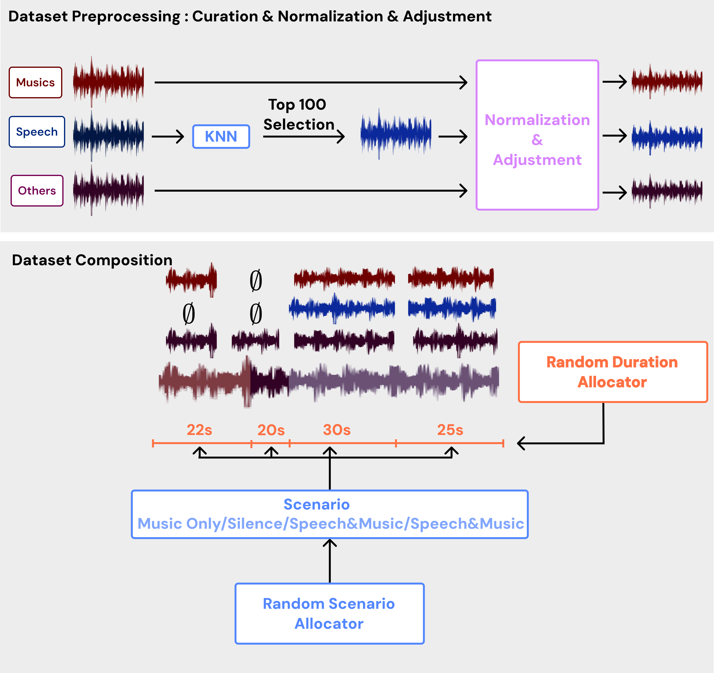
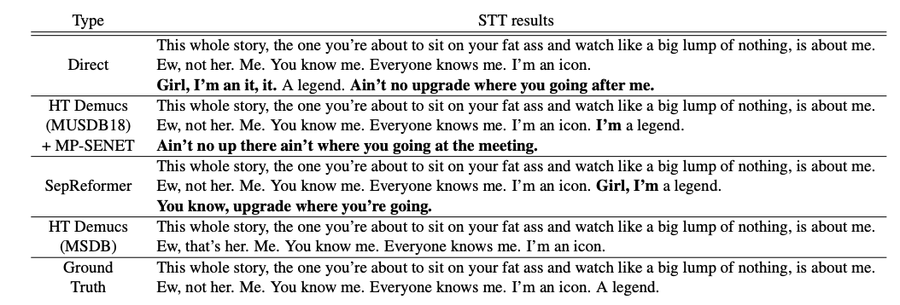

This repository provides the dataset designed for training music source separation models on real-world media content. The dataset integrates multiple audio sources, enabling advanced processing for speech and music separation.
Run the following command to generate the dataset using the default configuration:
python3 gen_dataset.py --config config.yamlThe dataset is constructed through a multi-step process, as illustrated below:
The following visualization highlights the Speech-to-Text (STT) evaluation results, demonstrating the effectiveness of our approach:
We provide a demonstration of separation results produced by HT Demucs trained on this dataset.

The following directory structure outlines the organization of raw and processed data:
data/
├── cv-corpus-17-curated # Common Voice curated dataset
│ ├── common_voice_curated_train
│ │ ├── common_voice_en_12345.wav
│ │ ├── common_voice_en_67890.wav
│ │ └── ...
│ └── common_voice_curated_test
│ ├── common_voice_en_2737.wav
│ ├── common_voice_en_71783.wav
│ └── ...
├── musdb # Music stem dataset
│ ├── train
│ │ ├── music-001.stem.mp4
│ │ ├── music-002.stem.mp4
│ │ └── ...
│ └── test
│ ├── music-003.stem.mp4
│ ├── music-004.stem.mp4
│ └── ...
└── musan # Noise dataset
├── music # Not used here
│ ├── music-001.wav
│ ├── music-002.wav
│ └── ...
├── noise # Background noise sound dataset
│ ├── free-sound # Free Sound source
│ │ ├── noise-sound-001.wav
│ │ ├── noise-sound-002.wav
│ │ └── ...
│ └── sound-bible # Sound Bible source
│ ├── noise-sound-bible-0071.wav
│ ├── noise-sound-bible-0072.wav
│ └── ...
└── speech # Not used here
├── speech-001.wav
├── speech-002.wav
└── ...
The processed dataset is organized as follows:
processed_data_curated/
├── train/
│ ├── Actions - Devil's Words_mix.wav
│ ├── Actions - Devil's Words_music.wav
│ ├── Actions - Devil's Words_speech.wav
│ ├── Actions - Devil's Words_others.wav
│ ├── ...
├── validation/
│ ├── AvaLuna - Waterduct_mix.wav
│ ├── AvaLuna - Waterduct_music.wav
│ ├── AvaLuna - Waterduct_speech.wav
│ ├── AvaLuna - Waterduct_others.wav
│ ├── ...
├── test/
│ ├── Arise - Run Run Run_mix.wav
│ ├── Arise - Run Run Run_music.wav
│ ├── Arise - Run Run Run_speech.wav
│ ├── Arise - Run Run Run_others.wav
│ ├── ...
├── train.csv
├── validation.csv
└── test.csv
If you use this dataset in your work, please cite as follows:
@misc{lee2024towards,
title = {TOWARDS REAL-WORLD MEDIA SEPARATION: ENHANCING MUSDB18 WITH OPEN-SOURCE SPEECH DATA FOR SPEECH AND MUSIC PROCESSING},
author = {Jung Min Lee and Su Min Park},
year = {2024},
note = {*Equal contribution},
howpublished = {\url{https://github.com/jmSNU/MediaSeparataionDatabase.git}},
}Our dataset is built using the following sources:
[2024.12.19] Thanks to the contributors of these datasets for providing valuable resources for audio processing research.